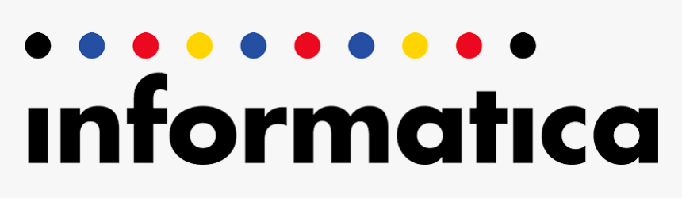

Interview Process
Recruitment Process :
Informatica conducts 5-6 rounds to select freshers as Software Engineer in their organisation.
1.Online Round
2.Technical Round 1
3.Technical Round 2
4.Technical Round 3
5.Technical Round 4
6.HR Round
Academic Criteria :
80 percent or above in B.Tech, Class X and XII.
No backlogs at the time of interview
Written Round :
online round is MCQ based test.
This round is generally conducted on cocube platform.
Sometimes, this round may be pen and paper based.
To clear this round you must be well prepared with data structures and algorithms, Operating System, Database Management System, Unix,
Aptitude and Puzzles.
Tip : Go through the previous years GATE question papers.
Technical Round and HR Round :
The students who clear the written round are called for Technical Interview. To clear this round you should be clear with your basics.
You should be prepared with Data structures and Algorithms, oops concept, Unix and DBMS. You should be well prepared with system design problems.
Students will be expected to write codes in the interview. They also ask questions from resume. They frequently ask questions about your previous projects.
You may be asked puzzles in this round.
To be prepared for puzzles you can practice from our Puzzles section.
Interview Tips
1. Understand the question completely and thoroughly
2. Try to link your computer science concept to real world problems.
3. Prepare Unix interview questions well, Software Testing questions especially programming test cases, and
Software Engineering subject.
4. Questions are mainly based on data structures and problem solving ability.
5. Be cool and calm while solving coding questions and start with your approach of solving problem and after that write clean code .
6. Always try to engage interviewers with your answer.
7. Whenever you get chance to ask questions then be prepare for that.
HR Round
You can expect general HR questions like :
1. Tell me something about your family?
2. What are your strong point?
3. What are your weak point?
4. Questions from resume
5. What are your long and short term goal?
Tips : Always be honest while answering HR questions.
Interview Experiences
It is always beneficial if you know what it is to be there at that moment.
So, to give you an advantage, we provide you Interview Experiences of candidates who have been in your situation earlier. Make the most of it.